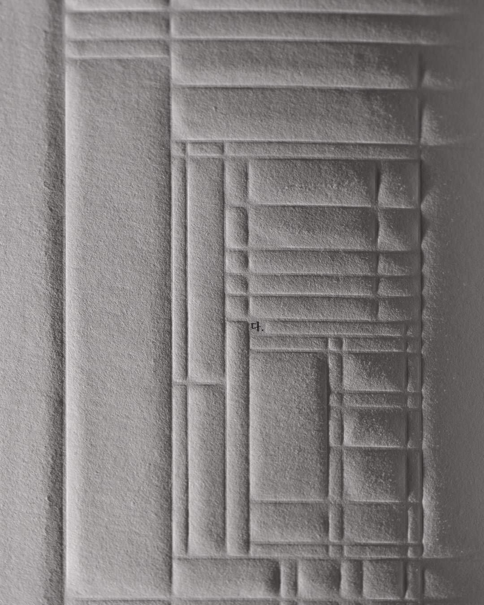
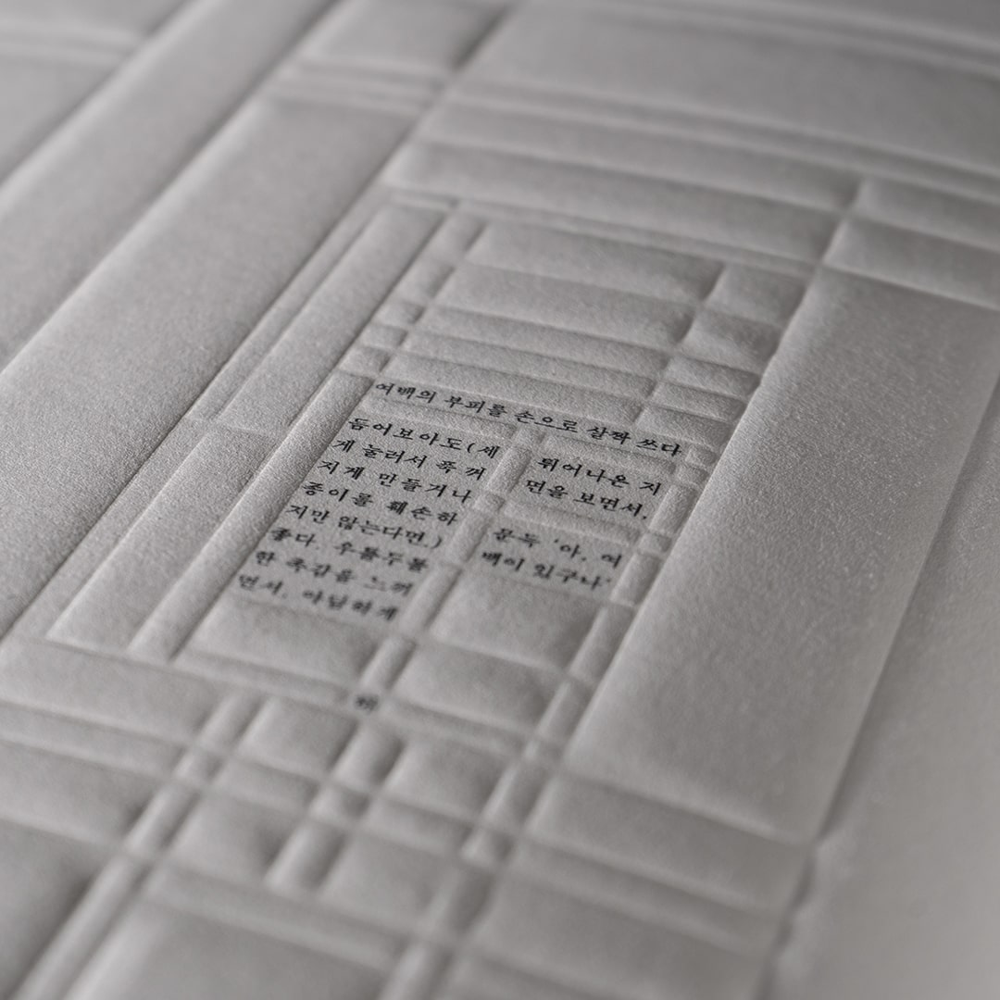
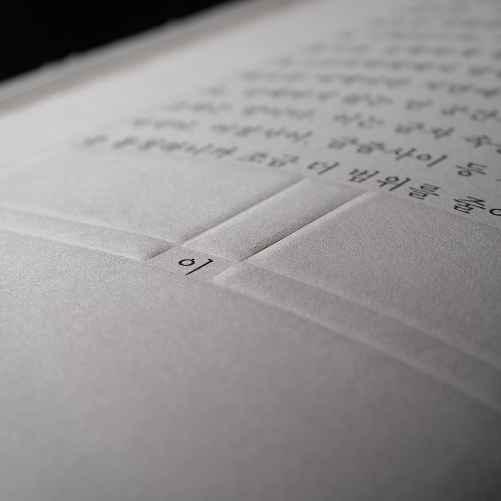
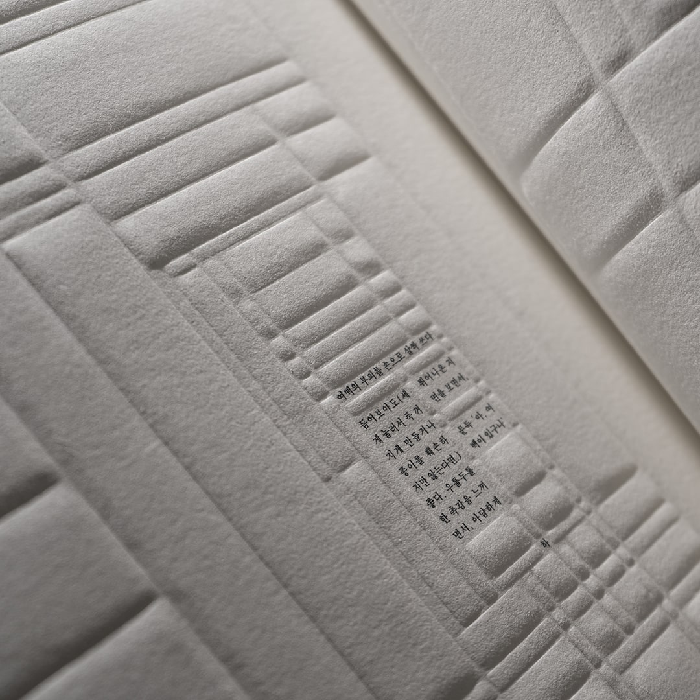
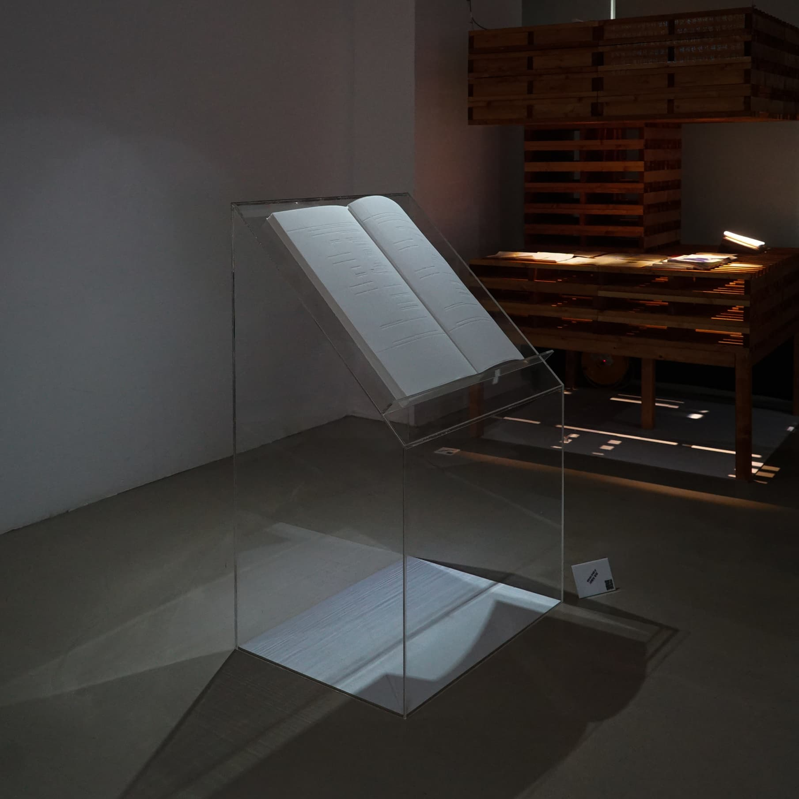

여백의 부피

타이포그래피에서 여백은 중요합니다. 이것은 그저 남겨져 버린 텅 빈 공간이 아니라, 글자 혹은 지면의 형상을 비움으로써 제어하는 공간이기 때문입니다. 「여백의 부피」는 지면 위에 존재하는 여백을 이야기합니다. 볼록하게 실체화한 여백의 ‘부피’를 통해, 비움으로 채워진 여백의 존재감을 환기합니다.
이 작업은 가로 세로 80cm 판형 판화지에 수작업으로 형압하고, 직접 제책했습니다. 홍익대학교 시각디자인과 졸업 전시에서 공개했습니다.



